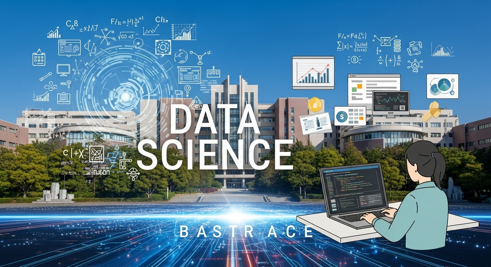
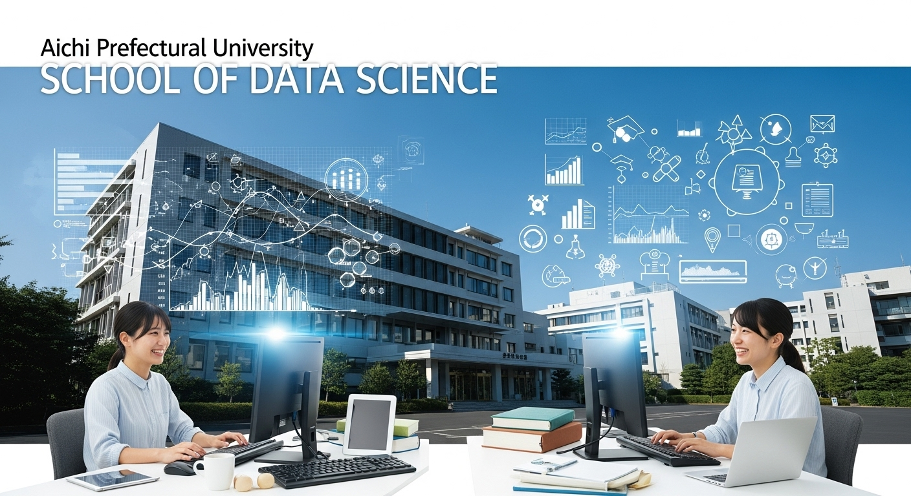

愛知県立大学でデータサイエンスを学ぶ！学部・入試・キャリアを徹底解説

現代社会は、まさに「データ」の海の中にあります。スマートフォンの利用履歴、インターネットでの検索キーワード、お店での購買記録、工場のセンサーから集まる情報、そして日々の気象データまで。私たちの周りには、ありとあらゆるデータが溢れています。この膨大なデータの中から、ビジネスや社会が抱える課題を解決するための「宝」を見つけ出し、未来をより良くするための羅針盤を描き出す。それが、今、世界中から熱い視線を集めている「データサイエンス」という学問です。
「データサイエンティスト」という職業は、近い将来最も魅力的な仕事の一つになるとも言われ、多くの企業がその専門知識を持つ人材を求めています。これからの時代を生き抜く上で、データサイエンスの知識やスキルは、文系・理系を問わず、非常に強力な武器となるでしょう。
「データサイエンスに興味があるけれど、どの大学で学べばいいのだろう？」
「専門的な知識を、しっかりと基礎から身につけたい。」
「学んだことを、将来の仕事にどう活かせるのか知りたい。」
そんな風に考えている高校生や受験生、そしてその保護者の皆さまも多いのではないでしょうか。
数ある大学の中で、今回私たちが光を当てるのは、愛知県長久手市にキャンパスを構える「愛知県立大学」です。公立大学ならではの落ち着いた環境の中で、地域に根ざしながらもグローバルな視点を養うことができるこの大学は、データサイエンスを学ぶ上で非常に魅力的な選択肢の一つです。
この記事では、愛知県立大学でデータサイエンスを学ぶことの魅力から、具体的な学部・学科の紹介、気になる入試情報、そして卒業後のキャリアパスまで、皆さまが知りたい情報を一つひとつ、丁寧に、そして徹底的に解説していきます。この記事を読み終える頃には、愛知県立大学でデータサイエンスを学ぶ自分の姿が、より鮮明にイメージできるようになっているはずです。
さあ、一緒に未来を拓く学びの扉を開けてみましょう。
愛知県立大学でデータサイエンスを学ぶ魅力とは？

まずは、愛知県立大学という大学そのものが持つ魅力について、少し深く掘り下げてみたいと思います。なぜ、この大学がデータサイエンスという最先端の学問を学ぶ場として、これほどまでに適しているのでしょうか。その理由は、大学の教育理念、学べる環境、そして地域との強いつながりの中に隠されています。
愛知県立大学の教育理念と特徴
愛知県立大学は、「知と実践」を基本理念に掲げています。これは、単に教室で理論を学ぶだけでなく、その知識を社会に出て実際に活用し、地域や国際社会に貢献できる人材を育てる、という強い意志の表れです。この理念は、データサイエンスという学問の性質と、非常によく合致しています。データサイエンスは、理論的な知識（数学、統計学、情報科学）と、それを現実の問題解決に応用する実践的なスキルが、車の両輪のように必要不可欠だからです。
大学の特徴として挙げられるのが、「少人数教育」の徹底です。学生一人ひとりに対して、教員が丁寧に向き合い、きめ細やかな指導を行うことができる環境が整っています。特に、データサイエンスのように専門性が高く、時には複雑な概念を理解しなければならない分野では、気軽に質問でき、対話を通じて学びを深められる環境は、何物にも代えがたい財産となるでしょう。大規模な大学では埋もれてしまいがちな個々の疑問や興味関心を、ここでは大切に育むことができます。
また、愛知県立大学は、外国語学部、日本文化学部、教育福祉学部、看護学部、そして情報科学部という、文理にまたがる多様な学部で構成されています。この多様性こそが、データサイエンスを学ぶ上での大きな強みとなります。データ分析の対象は、IT分野に限りません。国際情勢の分析、古典文学のテキストマイニング、教育効果の測定、医療データの解析など、あらゆる分野でデータは活用されています。他学部の学生と交流したり、共通の授業を受けたりする中で、自分の専門分野を異なる視点から見つめ直し、データサイエンスの応用範囲の広さを肌で感じることができるのです。このような学際的な環境は、広い視野を持ったデータサイエンティストを育てるための理想的な土壌と言えるでしょう。
落ち着いたキャンパスの雰囲気も魅力の一つです。緑豊かな長久手の丘に広がるキャンパスは、じっくりと学問に打ち込むのに最適な環境です。学生と教職員の距離が近く、アットホームな雰囲気の中で、安心して大学生活を送ることができます。
データサイエンスが学べる学部・学科の紹介
愛知県立大学でデータサイエンスを本格的に、そして体系的に学ぶことができる中心的な場所は、「情報科学部 情報科学科」です。この学科は、情報化社会の進展を支える基盤技術から、その応用までを幅広く探求することを目的としており、カリキュラムの中にデータサイエンスに関する専門科目が豊富に用意されています。
情報科学科では、コンピュータの仕組みといった基礎的な部分から始まり、プログラミング、アルゴリズム、データベース、ネットワークといった情報科学の根幹を成す知識を学びます。そして、その土台の上に、人工知能（AI）、機械学習、データマイニング、統計的モデリングといった、データサイエンスの中核をなす専門分野の学びを積み重ねていきます。3年次、4年次になると、より専門的な研究室に所属し、卒業研究として自らが設定したテーマに深く取り組むことになります。このプロセスを通じて、単なる知識の習得にとどまらない、真の課題解決能力を養うことができるのです。
しかし、データサイエンスの学びは情報科学科だけに閉ざされているわけではありません。先ほども触れたように、愛知県立大学の強みは学際性にあります。例えば、外国語学部や国際関係学部では、国際社会の動向や経済データを分析するために統計的な手法が用いられます。日本文化学部では、過去の文献をデジタル化し、テキストデータとして分析することで、新たな知見を見出す研究も行われています。教育福祉学部では、教育の効果測定や社会調査のデータを分析し、より良い支援のあり方を探求します。
情報科学科の学生が、これらの文系学部の授業を履修することで、データ分析の「技術」だけでなく、「何のために分析するのか」という目的意識や、社会的な文脈を理解する力を深めることができます。逆に、文系学部の学生が情報科学の基礎を学ぶことで、自らの専門分野に新たな分析の視点を取り入れることも可能です。このように、学部間の垣根を越えた学びの機会が提供されている点は、愛知県立大学ならではの大きな魅力と言えるでしょう。
地域に根ざした公立大学のメリット
愛知県立大学が「公立大学」であること、そして日本のものづくり産業の中心地である「愛知県」に立地していることは、データサイエンスを学ぶ上で計り知れないメリットをもたらします。
愛知県は、トヨタ自動車を筆頭とする世界的な自動車産業の集積地であり、航空宇宙産業や工作機械など、高度な技術力を持つ企業が数多く存在します。これらの製造業の現場では、今まさに「デジタルトランスフォーメーション（DX）」が進行しており、工場のセンサーから得られるビッグデータの解析による生産性の向上や、製品の品質管理、需要予測など、データサイエンスの力が強く求められています。
愛知県立大学は、こうした地域企業との間に強固な連携関係を築いています。これにより、学生は大学での学びを現実のビジネス課題に応用する、貴重な機会を得ることができます。例えば、企業との共同研究プロジェクトに参加し、実際のデータを使って分析を行ったり、インターンシップを通じて、データサイエンティストが現場でどのように活躍しているのかを間近で体験したりすることが可能です。教科書の中だけでは決して得られない、生きた知識と経験は、将来キャリアを考える上で大きな自信につながるはずです。
また、地域が抱える社会的な課題、例えば交通渋滞の緩和、防災・減災対策、地域医療の最適化といったテーマに、データサイエンスを活用して取り組む研究も盛んに行われています。自分が学んだ知識や技術が、身近な地域社会をより良くするために直接役立つという実感は、学ぶことへの大きなモチベーションとなるでしょう。
このように、愛知県立大学は、その教育理念、学際的な環境、そして地域との強いつながりという三つの大きな柱によって、次世代を担うデータサイエンティストを育むための、またとない学びの場を提供しているのです。
愛知県立大学「情報科学科」のデータサイエンス教育
それでは、愛知県立大学におけるデータサイエンス教育の中核を担う「情報科学部 情報科学科」について、さらに詳しく見ていきましょう。ここでは、具体的にどのような専門分野を学び、どのような実践的な経験を積み、最終的にどんなスキルを身につけることができるのか、その教育内容の核心に迫ります。
情報科学科で学べるデータサイエンスの専門分野
情報科学科のカリキュラムは、データサイエンスの広大な領域を体系的にカバーできるように、緻密に設計されています。1・2年次では、まず土台となる基礎知識を固めます。線形代数や微分積分といった数学の基礎、統計学の初歩、そしてC言語やPythonといったプログラミングの基本を徹底的に学びます。この基礎固めが、後々の専門的な学習において非常に重要になってきます。
そして、学年が上がるにつれて、より専門的で応用的な分野へと学びを進めていきます。具体的には、以下のようなデータサイエンスの中核をなす分野を深く探求することができます。
- 人工知能（AI）と機械学習:
これは、データサイエンスの中でも特に注目されている分野です。コンピュータに人間のような学習能力を持たせる「機械学習」のアルゴリズム（例えば、回帰、分類、クラスタリングなど）の理論を学び、実際にプログラムを組んで実装します。画像認識（写真に写っているものを識別する技術）、自然言語処理（人間の言葉をコンピュータに理解させる技術）、音声認識など、AIが社会でどのように活用されているのか、その仕組みを根本から理解することができます。近年話題の深層学習（ディープラーニング）についても、専門の講義で深く学ぶ機会が設けられています。 - データマイニングとビッグデータ解析:
「マイニング」とは「採掘」を意味します。つまりデータマイニングとは、膨大なデータの山（ビッグデータ）の中から、これまで気づかれていなかった有用なパターンや法則、関連性を「掘り出す」技術です。例えば、スーパーの購買履歴データから「パンと牛乳を一緒に買う人が多い」といった関連性（アソシエーションルール）を見つけ出し、商品の陳列に活かす、といったことが可能になります。情報科学科では、このようなビッグデータを効率的に処理・分析するための技術やアルゴリズムを学びます。 - 統計的モデリング:
データサイエンスの根幹を支えるのは、統計学です。データが持つ不確実性を数学的に表現し、データから意味のある結論を導き出すための手法を学びます。単に公式を暗記するだけでなく、なぜそのモデルが適切なのか、どのような仮定に基づいているのかを深く理解し、現象を説明・予測するための統計モデルを構築する能力を養います。 - データベースと情報検索:
膨大なデータを効率的に管理し、必要な情報を素早く取り出すためには、データベースの知識が不可欠です。SQLなどのデータベース言語を習得し、データの設計から運用までを学びます。また、Googleのような検索エンジンが、どのようにしてウェブ上の膨大な情報の中から最適な答えを見つけ出しているのか、その裏側にある情報検索の技術についても探求します。
これらの専門分野は、それぞれが独立しているわけではなく、互いに深く関連し合っています。情報科学科では、これらの知識をバランス良く学ぶことで、多角的な視点から課題に取り組むことができる、総合的な能力を持った人材の育成を目指しています。
実践的な学び（演習・プロジェクト）の機会
情報科学科の教育の大きな特徴は、講義で理論を学ぶだけでなく、それを実際に手を動かして試す「実践」の機会が非常に豊富であることです。ほとんどの専門科目には、講義とセットで「演習」の時間が設けられています。
演習では、学生一人ひとりがコンピュータに向かい、講義で学んだアルゴリズムをプログラミングしたり、与えられたデータセットを分析したりします。プログラミングでエラーが出て悩んだり、分析結果が思ったようにならずに試行錯誤したり、といった経験を通じて、理論の理解はより深く、確かなものになっていきます。少人数教育のメリットはここでも発揮され、教員や大学院生のティーチングアシスタント（TA）が巡回し、個別の質問に丁寧に答えてくれるため、初心者でも安心して取り組むことができます。
さらに、学年が進むと、より実践的な「プロジェクト型学習（PBL: Project-Based Learning）」の機会も増えてきます。これは、数人の学生でチームを組み、与えられた課題（例えば、「学内のレストランの混雑を予測するシステムを開発せよ」といったもの）に対して、企画から設計、開発、発表までを一貫して行う授業形式です。このプロセスを通じて、専門知識だけでなく、チームで協力して物事を進めるコミュニケーション能力や、課題解決に向けた論理的思考力、そしてプレゼンテーション能力といった、社会で必須となるスキルを総合的に鍛えることができます。
そして、大学での学びの集大成となるのが「卒業研究」です。学生は、AI、データ解析、コンピュータグラフィックス、ネットワークなど、各教員が専門とする研究室に所属します。そして、自らが最も興味を持つテーマを設定し、1年間（あるいはそれ以上）の時間をかけて、教員の指導のもとで深く研究に取り組みます。最先端の論文を読み解き、新たな手法を考案し、実験と検証を繰り返す。この卒業研究の経験は、困難な課題に粘り強く立ち向かう探求心と、未知の問題を自らの力で解決していく能力を飛躍的に向上させてくれるでしょう。
身につくスキルと知識（AI、ビッグデータ、プログラミングなど）
愛知県立大学情報科学科での4年間の学びを通じて、卒業時には次のような多岐にわたる知識とスキルを身につけることができます。これらは、データサイエンティストとして、あるいはIT社会を支える技術者として活躍していくための、強力な基盤となります。
- プログラミングスキル:
データ分析で広く使われているPythonやRをはじめ、システムの基盤を理解するために重要なC言語など、複数のプログラミング言語を習得します。単にコードが書けるだけでなく、効率的で読みやすい、質の高いプログラムを設計・実装する能力が身につきます。 - データ分析・統計解析スキル:
統計学の基礎理論から、機械学習の応用的なアルゴリズムまでを体系的に理解し、様々なデータを適切に分析する能力を養います。Scikit-learn、TensorFlow、PyTorchといった機械学習ライブラリや、統計解析ツールを自在に使いこなし、データから価値ある知見を引き出すことができます。 - データエンジニアリングスキル:
大量のデータを扱うためのデータベース（SQL）の知識や、データを収集・加工・整理する「データ前処理」の技術を習得します。分析の前段階である、この地道で重要な作業を正確に行うスキルは、現場で非常に重宝されます。 - 課題解決能力と論理的思考力:
与えられた課題に対して、どのようなデータが必要で、どのような分析手法が適切かを自ら考え、計画を立てて実行し、得られた結果を論理的に考察する、という一連のプロセスを繰り返し訓練します。これにより、ビジネスや研究の現場で直面する未知の問題にも対応できる、本質的な課題解決能力が身につきます。 - コミュニケーション・プレゼンテーションスキル:
複雑な分析結果を、専門家でない人にも分かりやすく伝え、説得する能力はデータサイエンティストにとって非常に重要です。演習での発表や卒業研究の報告会などを通じて、自分の考えを整理し、効果的に伝えるプレゼンテーションスキルを磨くことができます。
これらのスキルは、特定の業界や企業だけで通用するものではありません。あらゆる産業がデータを活用しようとしている現代において、これらのスキルセットは、あなたのキャリアの可能性を無限に広げてくれる、まさに「一生モノの財産」となるはずです。
愛知県立大学情報科学科の入試情報を徹底解説
ここまで愛知県立大学情報科学科の魅力的な教育内容についてお話ししてきましたが、ここからは受験生の皆さんが最も気になるであろう「入試」に関する情報を、具体的かつ詳細に解説していきます。しっかりと情報を整理し、自分に合った戦略を立てることが、合格への第一歩です。
募集人数と偏差値（過去の傾向）
まずは、どのくらいの学生が募集され、どの程度の学力が求められるのか、基本的な情報を確認しましょう。
募集人数（2024年度入試参考）
- 一般選抜 前期日程: 35名
- 一般選抜 後期日程: 10名
- 学校推薦型選抜: 15名
- 合計: 60名
このように、情報科学科の入学定員は60名と、比較的少人数であることがわかります。これは、先ほど述べた手厚い少人数教育を実現するためのものです。入試方式としては、学力試験が中心の「一般選抜」と、高校での成績や活動を評価する「学校推薦型選抜」が主な柱となっています。
偏差値と倍率の傾向
大学の難易度を示す指標としてよく用いられるのが偏差値です。大手予備校が公表しているデータによると、愛知県立大学情報科学科の偏差値は、概ね52.5〜57.5の範囲で推移しています。これは、国公立大学の情報系学科の中では中堅レベルに位置し、しっかりとした受験対策が必要であることを示しています。
また、志願者数を募集人数で割った「倍率」も気になるところです。過去の入試結果を見ると、前期日程の倍率は2.5倍〜4.0倍程度、後期日程は募集人数が少ないこともあり、5.0倍〜10倍以上と高くなる傾向があります。学校推薦型選抜の倍率は、2.0倍〜3.0倍程度で推移することが多いようです。
ただし、これらの数値はあくまで過去の傾向であり、年度によって変動します。大切なのは、偏差値や倍率に一喜一憂するのではなく、合格するために必要な学力を着実に身につけていくことです。これらのデータは、自分の現在の立ち位置を確認し、学習計画を立てる上での一つの目安として活用してください。
入試方式と出願期間（一般前・後、推薦など）
愛知県立大学情報科学科では、受験生の多様な能力や背景を評価するため、複数の入試方式が用意されています。それぞれの特徴を理解し、自分に最も適した方式を選ぶことが重要です。
- 一般選抜（前期日程・後期日程）:
大学入学共通テストと、大学が独自に行う個別学力検査（二次試験）の合計点で合否が決まる、最も一般的な入試方式です。学力に自信があり、最後まで粘り強く勉強を続けられる人に向いています。- 出願期間: 1月下旬〜2月上旬
- 試験日: 前期日程 2月下旬、後期日程 3月中旬
- 学校推薦型選抜:
出身高等学校長の推薦に基づき、出願する方式です。大学入学共通テストの成績に加え、調査書、志望理由書、そして面接によって総合的に評価されます。高校での学習成績（評定平均値）が優秀で、かつ情報科学分野への強い学習意欲や明確な目的意識を持っている人におすすめです。一般選抜よりも早い時期に合否が決まるというメリットもあります。- 出願期間: 11月上旬
- 試験日: 11月下旬
これらのスケジュールは年度によって変更される可能性がありますので、必ず大学が発表する最新の募集要項で正確な日程を確認するようにしてください。
共通テストと個別試験の科目・配点
合格を勝ち取るためには、どの科目にどれくらいの比重が置かれているのか、つまり「配点」を正確に把握し、戦略的に学習を進めることが不可欠です。
大学入学共通テスト（前期日程・後期日程共通）
情報科学科では、以下の5教科7科目が課されます。
- 国語: 200点
- 地理歴史・公民: 100点（世界史B, 日本史B, 地理B,「倫理、政治・経済」から1科目選択）
- 数学: 200点（「数学I・数学A」および「数学II・数学B」）
- 理科: 200点（物理, 化学, 生物から2科目選択、または物理必須＋化学,生物から1科目選択）
※2025年度入試からは変更の可能性あり。物理必須となる見込み。 - 外国語: 200点（英語 ※リスニングを含む）
- 合計: 900点
個別学力検査（二次試験）
- 前期日程:
- 数学（数学I, II, III, A, B）: 400点
- 理科（「物理基礎・物理」または「化学基礎・化学」から1科目選択）: 400点
- 合計: 800点
- 後期日程:
- 数学（数学I, II, III, A, B）: 400点
- 合計: 400点
配点のポイント
ここからわかる重要なポイントは、数学と理科（特に物理）が極めて重視されているということです。前期日程では、共通テスト（900点）と二次試験（800点）の合計1700点満点のうち、数学が合計600点（共通テスト200点＋二次試験400点）、理科が合計600点（共通テスト200点＋二次試験400点）を占めています。この2教科だけで全体の7割以上を占める計算になります。
したがって、愛知県立大学情報科学科を目指すのであれば、数学と理科を得点源にすることが合格への絶対条件と言えるでしょう。もちろん、他の科目で大きく失点しないことも大切ですが、学習時間の配分を考える上で、この配点比率は常に意識しておく必要があります。
出願資格と試験内容のポイント
出願資格
一般選抜は、高等学校等を卒業した者（または卒業見込みの者）であれば、基本的に誰でも出願可能です。
学校推薦型選抜には、いくつかの条件があります。例えば、「全体の学習成績の状況（評定平均値）が4.0以上」といった成績基準や、「合格した場合は入学を確約できる者」といった専願の条件が課されます。また、1つの高校から推薦できる人数に制限がある場合もあります。自分が条件を満たしているか、高校の先生とよく相談しましょう。
試験内容のポイント
- 数学（二次試験）:
出題範囲は数学I・A、II・B、IIIと幅広く、特に微分・積分、ベクトル、複素数平面、数列などが頻出分野です。標準的な問題が多いですが、計算量が多かったり、論理的な思考力を問う証明問題が出題されたりするため、付け焼き刃の知識では太刀打ちできません。教科書レベルの基礎を完璧にした上で、標準的な問題集を繰り返し解き、解法のパターンを身につけることが重要です。また、自分の考えを採点者に分かりやすく伝える、丁寧な答案作成の練習も欠かせません。 - 理科（二次試験）:
物理または化学からの選択となりますが、大学での学びを考えると物理を選択することが強く推奨されます。物理では、力学と電磁気学が最重要分野であり、毎年必ず出題されます。現象を公式の丸暗記で解くのではなく、なぜその法則が成り立つのか、根本的な原理から理解することが求められます。 - 面接（学校推薦型選抜）:
面接では、「なぜ愛知県立大学の情報科学科で学びたいのか」「データサイエンスにどのような興味を持っているのか」「高校時代にどんなことに打ち込んできたか」「将来の夢は何か」といった、志望動機や学習意欲、人柄などを問われます。自分の言葉で、熱意をもって語れるように、事前にしっかりと自己分析を行い、考えをまとめておく練習が必要です。
オープンキャンパスや大学資料の活用
入試情報を集めるだけでなく、大学の雰囲気を肌で感じることも、モチベーションを高める上で非常に大切です。ぜひ、夏に開催されるオープンキャンパスに参加してみましょう。
オープンキャンパスでは、大学の教員による模擬授業を体験したり、研究室を見学して最新の研究に触れたり、在学生の先輩から直接、大学生活のリアルな話を聞いたりすることができます。パンフレットだけでは伝わらない、大学の空気感や魅力を知る絶好の機会です。個別相談会では、入試に関する疑問や不安を大学の職員に直接質問することもできます。
また、大学の公式ウェブサイトには、入試情報はもちろん、カリキュラムの詳細や教員の研究紹介、在学生の声など、貴重な情報が満載です。大学案内（パンフレット）や募集要項は必ず取り寄せ、隅々まで読み込みましょう。これらの情報を積極的に活用し、愛知県立大学で学ぶ自分の姿を具体的にイメージすることが、長い受験勉強を乗り切るための大きな力となるはずです。
データサイエンスを学んだ先のキャリアパスと就職
大学で専門的な知識やスキルを身につけた後、どのような未来が待っているのか。これは、皆さんや保護者の方々にとって、非常に関心の高いテーマだと思います。愛知県立大学でデータサイエンスを学んだ卒業生たちは、社会の様々な分野でその能力を発揮し、活躍しています。ここでは、具体的なキャリアパスや就職状況について見ていきましょう。
データサイエンティストの具体的な仕事内容
まず、「データサイエンティスト」とは、一体どのような仕事をする職業なのでしょうか。一言で言えば、「データ活用を通じて、ビジネスや社会の課題を解決する専門家」です。その仕事内容は多岐にわたりますが、一般的には以下のようなプロセスを担います。
- 課題発見・定義（Business Understanding）:
まず、ビジネス上の課題が何であるかを明確にするところから始まります。「売上が伸び悩んでいるのはなぜか？」「顧客が離れてしまう原因は何か？」といった漠然とした問題を、データ分析によって解決可能な具体的な問い（例えば、「どの顧客層の離反率が高いか？」）に落とし込んでいきます。ここでは、ビジネスに関する深い理解と、関係者とのコミュニケーション能力が求められます。 - データ収集・理解（Data Understanding & Collection）:
次に、定義した課題を解決するために、どのようなデータが必要かを考え、社内外からデータを収集します。顧客の属性データ、購買履歴データ、ウェブサイトのアクセスログ、SNSの投稿データなど、様々なデータを組み合わせることもあります。 - データ前処理（Data Preparation）:
集めたデータは、そのままでは分析に使えないことがほとんどです。欠損している値があったり、表記がバラバラだったり（「東京」と「東京都」など）、異常な値が含まれていたりします。こうした「汚れた」データを、分析しやすいようにきれいに整える作業を「データ前処理」または「データクレンジング」と呼びます。この工程は非常に地道で時間のかかる作業ですが、分析の質を左右する極めて重要なステップです。 - モデリング・分析（Modeling & Analysis）:
いよいよデータ分析の核心部分です。目的に応じて、統計的な手法や機械学習のアルゴリズムを用いて、データの中に潜むパターンや法則を見つけ出します。例えば、顧客の離反を予測するモデルを構築したり、商品を推薦するアルゴリズムを開発したりします。 - 評価（Evaluation）:
構築したモデルが、実際に役立つものかどうかを評価します。予測精度は十分か、ビジネス上の目標達成に貢献できるか、といった観点から厳密に検証します。 - 施策提案・実装（Deployment & Action）:
分析結果やモデルから得られた知見を、具体的なビジネスアクションに繋げます。分析結果をグラフなどで分かりやすく可視化し、「この顧客層に、このようなキャンペーンを実施すべきです」「このウェブサイトのデザインを変更すれば、購入率が上がる可能性があります」といった形で、専門家でない人にも理解できるように説明し、施策の実行を促します。
このように、データサイエンティストは、数学やプログラミングのスキルだけでなく、ビジネスを理解する力、論理的に物事を考える力、そして結果を分かりやすく伝えるコミュニケーション能力など、非常に幅広いスキルが求められる、やりがいの大きな仕事なのです。
卒業生の主な就職先と業種
愛知県立大学情報科学科の卒業生は、大学で培った高度な専門性を武器に、多様な業界で活躍しています。大学が公表している就職実績を見ると、その活躍の場の広さがよくわかります。
- IT・情報通信業:
最も多い就職先は、やはりこの業界です。NTTデータ、SCSK、TISといった大手システムインテグレーター（SIer）や、ヤフー、楽天グループなどのWebサービス企業、ソフトウェア開発会社など、情報技術を核とする企業で、システムエンジニアやプログラマー、データアナリストとして活躍しています。 - 製造業:
愛知県という土地柄を反映し、製造業への就職者も非常に多いのが特徴です。トヨタ自動車、デンソー、アイシンといった自動車関連企業や、三菱電機、ブラザー工業などの電機メーカーで、製品開発におけるデータ解析、生産ラインの効率化（スマートファクトリー）、品質管理、研究開発（R&D）などに携わっています。 - 金融・保険業:
銀行や証券会社、保険会社などでは、株価の予測、融資の審査モデルの構築、不正取引の検知、顧客に合わせた金融商品の推薦（リコメンデーション）など、データサイエンスが幅広く活用されています。 - コンサルティング・サービス業:
専門知識を活かして、様々な企業の課題解決を支援するコンサルティングファームや、マーケティングリサーチ会社なども人気の就職先です。 - 公務員:
近年では、国や地方自治体でも、統計データを活用した政策立案（EBPM: 証拠に基づく政策立案）の重要性が高まっており、データ分析のスキルを持つ公務員の需要も増えています。
また、より高度な専門性を追求するために、大学院へ進学する学生も少なくありません。愛知県立大学大学院の情報科学研究科をはじめ、東京大学や京都大学、名古屋大学といった国内トップクラスの大学院に進学し、修士課程や博士課程で研究を続け、研究者や企業のR&D部門で活躍する道も開かれています。
取得可能な資格と有利なスキル
データサイエンスの分野では、学歴や学位だけでなく、具体的なスキルや実績が重視される傾向があります。在学中に以下のような資格を取得したり、スキルを証明できる成果物を作成したりすることで、就職活動を有利に進めることができます。
- 情報処理技術者試験:
経済産業省が認定する国家資格です。「基本情報技術者試験」はITの基礎知識を網羅的に証明でき、「応用情報技術者試験」はより高度な知識と応用力をアピールできます。さらに専門的な「データベーススペシャリスト」や「ネットワークスペシャリスト」なども、目指すキャリアに応じて挑戦する価値があります。 - 統計検定:
統計学に関する知識や活用力を評価する検定です。データサイエンスの根幹をなす統計学の理解度を客観的に示すことができます。2級以上を取得しておくと、高い評価につながりやすいでしょう。 - G検定・E資格:
日本ディープラーニング協会（JDLA）が主催する、AIに関する資格です。「G検定」はAIの基礎知識や活用法を問うもので、「E資格」はディープラーニングの実装スキルを問う、より専門的なエンジニア向けの資格です。 - ポートフォリオの作成:
資格以上に重要視されるのが、自分自身のスキルを証明する「ポートフォリオ」です。これは、自分がこれまでに行ってきた分析プロジェクトや開発したプログラムなどをまとめた作品集のようなものです。例えば、授業の課題で取り組んだ分析レポートや、Kaggle（データ分析コンペティションのプラットフォーム）への参加実績、自分でテーマを見つけて分析した結果をブログやGitHubで公開したものなどが、ポートフォリオになります。具体的な成果物を示すことで、企業に対して自分の実践的な能力を効果的にアピールすることができます。
愛知県立大学の就職支援体制
愛知県立大学では、学生一人ひとりのキャリア形成を強力にバックアップするための、手厚い就職支援体制が整っています。大学の「キャリア支援センター」がその中心的な役割を担っており、様々なプログラムやサービスを提供しています。
- 個別キャリア相談:
経験豊富なキャリアカウンセラーが、学生一人ひとりの悩みや希望に寄り添い、マンツーマンで相談に応じてくれます。「どんな業界が向いているかわからない」「自己PRの書き方がわからない」といった初歩的な相談から、具体的な企業選び、面接対策まで、きめ細やかなサポートを受けることができます。 - 各種セミナー・ガイダンス:
自己分析セミナー、業界・企業研究セミナー、履歴書・エントリーシート対策講座、面接対策講座など、就職活動の各ステップに合わせた多彩なセミナーが年間を通じて開催されます。 - 学内企業説明会:
多くの企業が大学のキャンパスを訪れ、学生向けに説明会を開催します。特に、愛知県立大学の学生を積極的に採用したいと考えている地元優良企業や、卒業生が活躍している企業などが多数参加するため、効率的に情報収集を行う絶好の機会です。 - インターンシップ支援:
大学を通じて、様々な企業のインターンシップに参加することができます。キャリア支援センターでは、インターンシップ情報の提供や、参加にあたっての相談、マナー講座なども実施しています。 - 卒業生とのネットワーク:
社会で活躍する卒業生を招いての講演会や交流会なども開催されます。先輩たちのリアルな体験談は、自分のキャリアを考える上で非常に参考になりますし、貴重な人脈を築くきっかけにもなります。
このように、愛知県立大学では、入学から卒業、そしてその先のキャリアまでを見据えた、一貫したサポート体制が整っているのです。
愛知県立大学でデータサイエンスを学ぶメリット
これまで様々な角度から愛知県立大学のデータサイエンス教育について解説してきましたが、ここで改めて、この大学で学ぶことの「メリット」を4つのポイントに整理してみたいと思います。これらのメリットは、あなたの大学生活をより豊かで、実り多いものにしてくれるはずです。
メリット１．公立大学ならではの学費と教育の質
大学進学を考える上で、学費は非常に重要な要素の一つです。愛知県立大学は公立大学であるため、私立大学と比較して学費が大幅に抑えられています。国立大学とほぼ同水準の授業料で、質の高い教育を受けられるというのは、経済的な観点から見て非常に大きなメリットです。
入学金や4年間の授業料を合わせると、私立大学の理系学部とは数百万円単位の差が生まれることも少なくありません。この経済的な負担の軽さは、保護者の方々にとって安心材料であると同時に、学生自身にとっても大きな意味を持ちます。例えば、浮いた費用を専門書の購入や資格試験の受験、あるいはプログラミングスクールへの参加など、自己投資に回すことができます。また、アルバイトに追われる時間を減らし、その分を勉学や研究、サークル活動など、大学でしかできない貴重な経験に充てることも可能になります。
もちろん、学費が安いからといって、教育の質が低いわけでは決してありません。むしろ、公立大学として税金によって運営されているからこそ、営利を目的とせず、純粋に学問の探求と人材育成に力を注ぐことができます。優秀な教員陣、充実した研究設備、そして体系化されたカリキュラム。これらが手頃な学費で提供されている点は、愛知県立大学が持つ最大の魅力の一つと言えるでしょう。
メリット２．少人数教育による手厚い指導
何度も触れてきましたが、愛知県立大学の大きな特徴は「少人数教育」です。情報科学科の1学年の定員が60名という規模は、学生一人ひとりの顔と名前が教員に認識され、双方向のコミュニケーションが生まれやすい理想的な環境です。
大規模な大学の講義では、数百人の学生を前に教員が一方的に話す形式になりがちで、質問したくてもなかなかタイミングが掴めなかったり、そもそも質問すること自体をためらってしまったりすることがあります。しかし、愛知県立大学では、教員と学生の物理的・心理的な距離が非常に近く、講義中はもちろん、講義後や研究室でも気軽に質問や相談をすることができます。
特に、プログラミングの演習や卒業研究など、実践的な学びの場面でこのメリットは最大限に発揮されます。プログラムのエラーがどうしても解消できない時、研究の方向性で悩んだ時、専門家の視点から的確なアドバイスをすぐにもらえる環境は、学習効率を飛躍的に高めてくれます。教員は、学生一人ひとりの理解度や進捗状況を把握しながら、個々のレベルに合わせた丁寧な指導を行ってくれます。
また、学生同士のつながりが密になるのも少人数教育の利点です。同じ目標を持つ仲間たちと、授業の課題について議論したり、教え合ったり、時には夜通しプログラミングに取り組んだり。そうした経験を通じて、生涯にわたる友情が育まれ、互いに切磋琢磨し合える貴重な学習コミュニティが形成されます。この強い連帯感は、困難な課題に直面した時の大きな支えとなるでしょう。
メリット３．最新の研究設備と環境
データサイエンス、特にAIやビッグデータ解析といった分野の研究には、高性能なコンピュータが不可欠です。複雑な計算や大量のデータ処理を行うためには、パワフルなCPUや、深層学習に必須となるGPU（Graphics Processing Unit）を搭載した計算機サーバーが必要となります。
愛知県立大学の情報科学科では、学生が自由に利用できる高性能な計算機室やサーバー環境が整備されています。自分のノートパソコンだけでは到底不可能な、大規模なデータ分析や機械学習モデルのトレーニングにも、存分に取り組むことができます。また、専門的なソフトウェアやデータベースなども学内ライセンスで利用できるため、最先端の技術に触れながら学習を進めることが可能です。
学習環境は、コンピュータ設備だけではありません。静かで集中できる図書館には、情報科学やデータサイエンスに関する国内外の専門書や学術雑誌が豊富に揃えられています。自習スペースや、グループでディスカッションができるラーニング・コモンズなども充実しており、自分の学習スタイルに合わせて最適な場所を選ぶことができます。
緑豊かで落ち着いた長久手のキャンパスは、日々の喧騒から離れ、じっくりと学問に没頭するのに最適なロケーションです。このような恵まれた研究設備と学習環境が、あなたの知的好奇心を刺激し、学びを深めるための強力な後押しをしてくれるはずです。
メリット４．地域企業との連携による実践機会
理論を学ぶだけでなく、それを現実社会でどう活かすかを体験できる機会が豊富にあること。これも、愛知県立大学で学ぶ大きなメリットです。
前述の通り、大学が立地する愛知県は、世界をリードする製造業の一大拠点です。愛知県立大学は、こうした地域企業と長年にわたって緊密な連携関係を築いてきました。これにより、学生は大学にいながらにして、社会の第一線で起きているリアルな課題に触れることができます。
例えば、企業から提供された実際のデータを用いて課題解決に取り組むPBL型の授業や、企業の技術者と共同で研究を進めるプロジェクトなどが実施されています。こうした経験を通じて、教科書で学んだ知識が、ビジネスの現場でどのように応用され、どのような価値を生み出すのかを肌で感じることができます。これは、学習へのモチベーションを高めるだけでなく、将来のキャリアを具体的にイメージする上でも非常に貴重な機会となります。
また、企業との連携は、インターンシップの機会にもつながります。夏休みなどの長期休暇を利用して、興味のある企業で就業体験を積むことで、業界や仕事内容への理解を深めることができます。インターンシップでの活躍が評価され、その後の就職活動に有利に働くケースも少なくありません。
地域に深く根ざし、社会との接点を大切にする愛知県立大学だからこそ提供できる、この「生きた学び」の機会は、あなたを単なる知識の持ち主から、社会で本当に活躍できる実践的な能力を備えた人材へと成長させてくれるでしょう。
データサイエンス専攻で知っておくべき注意点
データサイエンスは非常に魅力的で将来性のある分野ですが、その一方で、この分野を志す上で知っておくべき、挑戦的な側面も存在します。光の部分だけでなく、影の部分も理解しておくことで、入学後のミスマッチを防ぎ、より充実した大学生活を送ることができます。ここでは、心構えとして知っておいてほしい4つの注意点についてお話しします。
注意点１．専門性の高さと学習負荷
データサイエンスは、数学、統計学、情報科学、そして対象分野の専門知識（ドメイン知識）といった、複数の学問領域が融合した学際的な分野です。そのため、学ぶべき知識の範囲が非常に広く、その一つひとつが高度な専門性を要求されます。
大学のカリキュラムは、これらの知識を体系的に学べるように組まれていますが、その分、学習量は決して少なくありません。次から次へと新しい概念や技術が登場し、毎週のようにプログラミングの課題やレポートが課されることも珍しくありません。講義に出席しているだけで自然と身につく、という甘い考えは通用せず、授業時間外での予習・復習や、自ら進んで関連書籍を読んだり、プログラムを書いたりする主体的な学習姿勢が不可欠です。
特に、1・2年次で学ぶ数学やプログラミングの基礎は、その後の全ての専門科目の土台となります。ここでつまずいてしまうと、後から取り返すのが非常に困難になります。楽をして単位を取ろうと考えるのではなく、一つひとつの授業に真摯に向き合い、着実に知識を積み重ねていく覚悟が必要です。学習負荷は高いですが、それを乗り越えた先には、確かな専門性と大きな達成感が待っています。
注意点２．数学・統計学の基礎が重要
データサイエンスの世界に足を踏み入れると、「AI」や「機械学習」といった華やかなキーワードに目を奪われがちです。しかし、それらの技術の根底を支えているのは、極めて論理的で地道な「数学」と「統計学」の世界です。
例えば、機械学習のアルゴリズムを深く理解するためには、線形代数（行列やベクトルの計算）や微分・積分（関数の変化を捉える）の知識が不可欠です。また、分析結果が本当に信頼できるものなのか、偶然そうなっただけではないのかを判断するためには、統計学的な思考（確率、検定、推定など）が必須となります。
高校で学ぶ数学、特に数学III（微分・積分、複素数平面など）や、数学B（ベクトル、数列、確率分布と統計的な推測）で学ぶ内容は、大学での学びに直接つながっています。もし、これらの分野に苦手意識がある場合は、入学前にしっかりと復習しておくことを強くお勧めします。もちろん、大学でも基礎から学び直す機会はありますが、高校レベルの知識が身についていることを前提に授業が進むことも多いため、スタートダッシュでつまずかないためにも、事前の準備は非常に重要です。数学や統計学は、データサイエンティストにとっての「共通言語」であり、避けては通れない道なのです。
注意点３．常に新しい知識を学ぶ姿勢が必要
IT・データサイエンスの世界は、技術の進歩が非常に速く、まさに「ドッグイヤー（1年が犬の7年に相当する）」とも言われるほど変化の激しい分野です。昨日まで最新だった技術が、今日にはもう古くなっている、ということも日常茶飯事です。
大学の4年間で学ぶ知識は、あくまでその時点での基礎であり、出発点に過ぎません。卒業後、社会に出てからも、常に新しい論文を読んだり、最新のプログラミング言語やライブラリを学んだり、海外の技術ブログをチェックしたりと、自ら情報をキャッチアップし、学び続ける姿勢が求められます。
「大学で勉強は終わり」ではなく、「大学は、学び続けるための方法を学ぶ場所」と捉えることが大切です。愛知県立大学では、専門知識だけでなく、未知の問題にどうアプローチするか、効率的に情報を収集・整理する方法は何か、といった「学び方」そのものを身につけることができます。旺盛な知的好奇心を持ち、新しいことを学ぶのを楽しめる人、変化を恐れずに挑戦し続けられる人が、この分野で長く活躍していくことができるでしょう。
注意点４．文系科目とのバランス
データサイエンスは理系の学問ですが、優れたデータサイエンティストになるためには、理系の知識だけでは不十分です。データを分析して得られた結果を、ビジネス上の価値に結びつけるためには、文系的な素養も同じくらい重要になります。
例えば、以下のような能力が求められます。
- 論理的思考力・批判的思考力: 目の前のデータや分析結果を鵜呑みにせず、「このデータは本当に正しいのか？」「他の解釈はできないか？」と多角的に考える力。
- 課題発見能力: ビジネスや社会が抱える本質的な課題は何かを見抜く力。
- コミュニケーション能力: 分析結果を、専門家でない人にも分かりやすく、説得力をもって伝える力。
- 倫理観: 個人情報やプライバシーの扱いや、AIがもたらす社会的影響などについて、倫理的な観点から正しく判断する力。
愛知県立大学は、情報科学部だけでなく、外国語学部や日本文化学部など、人文社会科学系の学部も充実した総合大学です。全学共通の教養科目などを通じて、歴史や哲学、経済学、法学といった幅広い分野の知識に触れる機会があります。専門の勉強が忙しい中でも、こうした文系的な学びに積極的に取り組むことで、視野が広がり、人間的な深みが増します。技術一辺倒になるのではなく、幅広い教養を身につけることが、最終的にあなたを、他の人にはない独自の強みを持った、代替不可能なデータサイエンティストへと成長させてくれるでしょう。
愛知県立大学合格に向けたデータサイエンス入試対策
さあ、いよいよ最後のセクションです。愛知県立大学情報科学科という魅力的な学びの場を、現実の目標として捉え、合格を勝ち取るための具体的な学習戦略について考えていきましょう。これまでの情報を踏まえ、効果的な入試対策を科目別に解説します。
共通テスト対策の重要ポイント
大学入学共通テストは、国公立大学入試の第一関門であり、ここで高得点を確保することが、二次試験に向けての大きなアドバンテージとなります。情報科学科の配点では、二次試験の比重が高いとはいえ、共通テストで失敗してしまうと挽回は非常に困難です。目標としては、合計点で70%〜75%以上を目指したいところです。
- 全科目をバランス良く:
まずは、苦手科目を作らないことが鉄則です。特定の科目が極端に低いと、他の科目でカバーするのが難しくなります。特に、国語や社会といった文系科目は、理系受験生にとっては後回しにしがちですが、配点も決して小さくありません。日々の学習計画の中に、これらの科目の演習時間も必ず組み込み、安定して得点できるようにしましょう。 - 英語はリーディングとリスニングの両輪で:
共通テストの英語は、リーディング100点、リスニング100点の均等配点です。大量の英文を速く正確に読む「速読力」と、一度しか放送されない音声を集中して聞き取る「リスニング力」の両方が求められます。日頃から長文に触れる習慣をつけるとともに、通学時間などを利用して英語の音声を聞き、耳を慣らしておくことが重要です。 - 数学・理科で高得点を狙う:
情報科学科を志望する以上、共通テストの数学（I・A, II・B）と理科（物理・化学）は、他の受験生と差をつけるべき得点源です。目標は80%以上、できれば90%を目指しましょう。共通テスト特有の問題形式や時間配分に慣れるため、過去問や予想問題集を繰り返し解き、時間内に満点を取るための戦略を確立することが大切です。基礎的な知識の抜け漏れがないか、教科書レベルから徹底的に確認しましょう。
個別試験の傾向と対策（数学・物理など）
二次試験は、あなたの本当の実力が問われる場です。愛知県立大学情報科学科の二次試験は、標準的な良問が多いとされていますが、付け焼き刃の知識では通用しません。本質的な理解に基づいた、確かな応用力が求められます。
- 数学の対策:
出題範囲は数学I・A・II・B・IIIと非常に広いため、全分野をまんべんなく学習する必要があります。中でも、微分法・積分法、ベクトル、複素数平面は頻出の重要分野です。- 基礎の徹底: まずは、教科書の章末問題レベルを完璧に解けるようにしましょう。公式や定理は、ただ暗記するだけでなく、なぜそうなるのかを証明できるレベルまで理解を深めることが重要です。
- 標準問題集の反復: 「青チャート」や「Focus Gold」といった網羅系の参考書の例題や練習問題を、最低3周は繰り返しましょう。解法を「見て理解する」だけでなく、何も見ずに自力で答案を再現できるまで練習します。
- 過去問演習: 高校3年生の夏以降は、過去問に本格的に取り組みましょう。最低でも5年分、できれば10年分を解き、出題傾向、難易度、時間配分を体で覚えます。愛知県立大学の問題だけでなく、同じレベルの他の国公立大学の問題に挑戦するのも良い練習になります。
- 記述力の養成: 二次試験は記述式です。答えが合っているだけでは満点はもらえません。自分の考えたプロセスが、採点者に明確に伝わるように、論理的で分かりやすい答案を作成する練習を日頃から心がけましょう。
- 物理の対策:
情報科学科の学びとの親和性を考えると、物理選択が有利です。特に、力学と電磁気学は最重要分野であり、ここをマスターすることが合格への鍵となります。- 現象の物理的イメージ: 公式を丸暗記して数字を当てはめるだけの解き方では、少しひねられた問題に対応できません。なぜその現象が起きるのか、物理的なイメージを常に持ちながら学習を進めましょう。図を描いて考える習慣をつけることが大切です。
- 基本問題の徹底: 「物理のエッセンス」などの参考書で、まずは基本的な概念と解法をしっかりと身につけます。
- 標準〜応用問題へのステップアップ: 「良問の風」や「名問の森」といった問題集に進み、より応用的な問題に対応できる力を養います。
- 過去問分析: 数学と同様に、過去問を分析し、頻出テーマや問題の形式に慣れておきましょう。
推薦入試の活用と対策
もしあなたが高校での成績に自信があり、情報科学への強い意欲を持っているなら、学校推薦型選抜の活用も有力な選択肢です。
- 評定平均の確保:
まずは、出願資格である評定平均（例：4.0以上）をクリアすることが大前提です。そのためには、1年生の時から、全ての科目で定期テストに真剣に取り組み、日々の授業態度や提出物にも気を配る必要があります。 - 志望理由書の作り込み:
推薦入試で最も重要なのが、志望理由書と面接です。なぜ数ある大学の中から愛知県立大学なのか、なぜ情報科学科で学びたいのか、データサイエンスのどのような点に魅力を感じているのか、入学後に何を学び、将来どのように社会に貢献したいのか。これらの問いに対して、あなた自身の言葉で、具体的なエピソードを交えながら、説得力のあるストーリーを構築する必要があります。何度も推敲を重ね、学校の先生や家族にも読んでもらい、客観的な意見をもらいましょう。 - 面接対策:
志望理由書に書いた内容を、さらに深掘りして質問されるのが面接です。ハキハキと自信を持って話せるように、模擬面接を繰り返し行いましょう。情報科学に関する最近のニュース（AI、ビッグデータ、IoTなど）にもアンテナを張っておき、自分の意見を述べられるようにしておくと、より高い評価につながります。
効果的な学習計画の立て方
長い受験勉強を乗り切るためには、闇雲に勉強するのではなく、戦略的な学習計画が不可欠です。
- 長期計画（年間）:
まず、入試本番までの1年間を、「基礎固め期（〜高3夏休み）」「実践力養成期（秋）」「直前期（冬〜）」といった大きな期間に区切ります。それぞれの期間で、どの科目の、どのレベルまでを終わらせるか、大まかな目標を設定します。 - 中期計画（月間・週間）:
年間の目標を達成するために、月単位、週単位で「何を」「どれだけ」やるかを具体的に決めます。「今週は数学の青チャートのベクトルの章を終わらせる」「今月は英単語帳の1〜5章を完璧にする」といった具体的なタスクに落とし込みます。 - 短期計画（毎日）:
1日のスケジュールを立て、どの時間にどの科目を勉強するかを決めます。大切なのは、計画を詰め込みすぎないこと。予備の時間や休憩時間も計画に組み込み、無理なく継続できる計画を立てましょう。 - PDCAサイクルを回す:
計画（Plan）を立てて実行（Do）したら、必ず振り返り（Check）を行いましょう。模試の結果などを参考に、計画通りに進んでいるか、課題は何かを分析し、次の計画に反映（Action）させます。このPDCAサイクルを繰り返すことで、学習の質は着実に向上していきます。
受験は団体戦とも言われます。時には友人や先生、家族に相談し、支え合いながら、ゴールを目指してください。あなたの努力が実を結ぶことを、心から応援しています。
愛知県立大学でデータサイエンスを学ぶあなたへ
ここまで、愛知県立大学でデータサイエンスを学ぶことの魅力について、本当に長い時間をかけてお話ししてきました。この記事を読んで、あなたの心の中に、未来への期待や、挑戦への意欲が少しでも芽生えてくれていたなら、これ以上に嬉しいことはありません。
私たちは今、歴史的な転換点に立っています。AIやビッグデータといった技術が、社会のあり方を根底から変えようとしている、そんな時代の真っ只中です。これから先、どのような未来が訪れるのか、誰にも正確に予測することはできません。しかし、一つだけ確かなことがあります。それは、データを読み解き、そこから価値を生み出す力、すなわちデータサイエンスの能力が、これからの社会を生き抜く上で、そしてより良い未来を創造していく上で、欠かすことのできない羅針盤になるということです。
愛知県立大学は、その羅針盤を手に入れるための、最高の環境の一つです。公立大学ならではの落ち着いた環境と手厚い教育、地域社会との強いつながりの中で育まれる実践的な学び、そして同じ志を持つ仲間たちとの出会い。ここで過ごす4年間は、あなたの人生にとって、かけがえのない財産となるでしょう。
もちろん、データサイエンスの道は、決して平坦なものではありません。時には、難解な数式に頭を悩ませ、終わらないプログラミングの課題に途方に暮れる夜もあるかもしれません。しかし、その苦しみの先にこそ、新しい世界を理解できた時の喜びや、自らの手で問題を解決できた時の達成感が待っています。その一つひとつの経験が、あなたをより強く、より賢く、そしてより優しい人へと成長させてくれるはずです。
もしあなたが、データという無数の星々の中から、未来を照らす光を見つけ出す旅に出てみたいと願うなら。もしあなたが、自らの知識と技術で、誰かの役に立ち、社会を少しでも良くしたいと考えるなら。愛知県立大学は、両手を広げてあなたを歓迎します。
今はまだ、自分の進むべき道に確信が持てなくても構いません。大切なのは、未知の世界に飛び込んでみようとする、その一歩を踏み出す勇気です。あなたのその挑戦を、私たちは心から応援しています。
長久手の丘の上で、皆さんとお会いできる日を楽しみにしています。